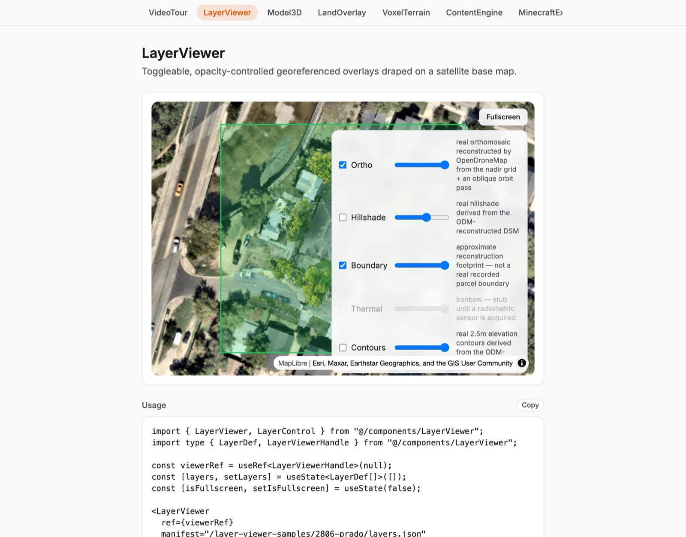
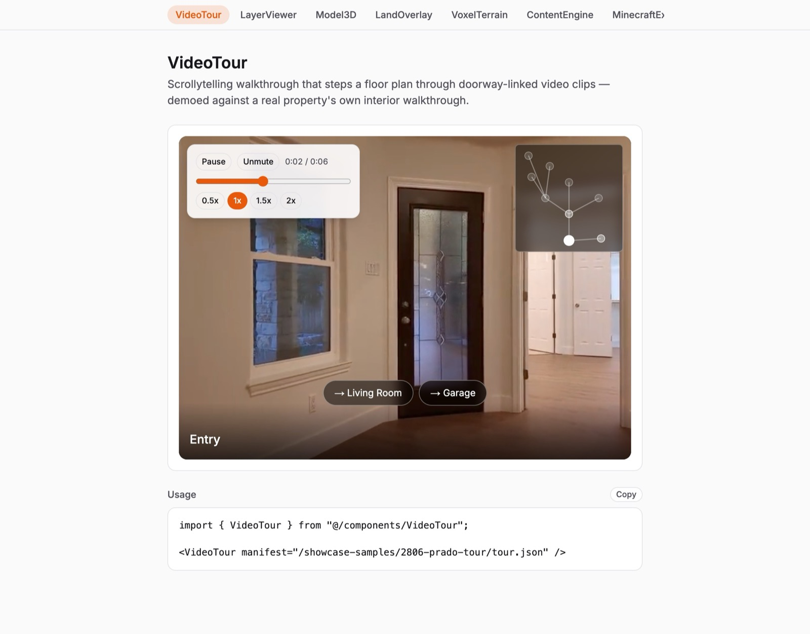
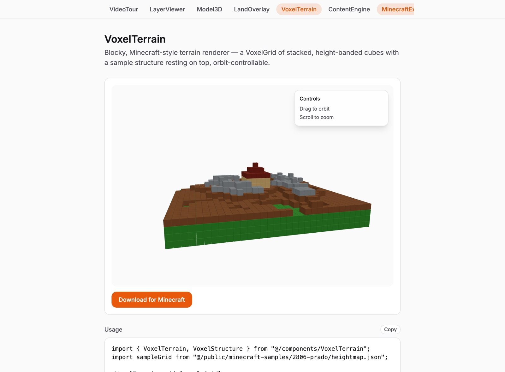

A shadcn-style framework, not a hosted app. Drop a georeferenced map layer viewer, a 3D/point-cloud viewer, a video walkthrough player, or a Minecraft terrain voxelizer into your own React app. Own the viewer. Buy only the compute.
MapLibre GL + a satellite base, with the orthomosaic, hillshade, contours, and parcel boundary as independently toggleable, opacity-controlled layers. This is the real orthophoto from an actual nadir-grid drone flight over 2806 Prado — not a stock tile.

Every component below ships with a live demo, a props table, and a full docs writeup — no half-built showcase pages.
Scrollytelling walkthrough that steps a floor plan through doorway-linked video clips.
real interior footageToggleable, opacity-controlled georeferenced overlays draped on a satellite base map.
real ortho + DSMOrbit-and-measure 3D mesh / point-cloud viewer for a property's photogrammetry output.
real textured meshA geo-anchored 3D model draped onto the satellite map at a real lat/lon, alongside the ortho/hillshade/boundary layers.
real georeferenceBlocky, Minecraft-style terrain renderer — a VoxelGrid of stacked, height-banded cubes, orbit-controllable.
real DSM-derived heightmapA per-property page composing VoxelTerrain, sample engineering docs, and flight-log telemetry into one surface.
real flight telemetryReal, spec-compliant Minecraft Sponge Schematic (.schem) download generated from a VoxelGrid.
real .schem outputDoorway-linked video clips with a floor-plan minimap and standard playback controls — the walkthrough shown here is real, unedited interior footage.

The exact digital surface model LayerViewer renders as a hillshade, voxelized into a Minecraft-style terrain block — same renderer stack as Model3D (three.js / react-three-fiber), with a sample structure resting on top and a real .schem export.

The components aren't demoed against mockups — this is the actual sequence that produced the sample data every viewer above renders.
Straight-down grid passes at 66ft AGL and 159ft AGL, ~75/70% overlap. No RTK on this rig — expect 1–3m drift, corrected manually downstream.
Structure-from-motion + dense point cloud → orthomosaic, DSM, and a textured mesh. 260 / 264 frames reconstructed on the reference job, run in Docker with the memory allocation actually tuned for it.
rio warp / rio cogeo create for a Cloud-Optimized GeoTIFF ortho; a custom Lambertian hillshade + block-pooled heightmap bake off the DSM; the mesh goes through gltf-transform (resize → simplify → Draco) for a browser-sized .glb.
Every layer lands in a typed manifest — {'{'} id, type, url, opacity, toggle {'}'} — and LayerViewer, Model3D, and VoxelTerrain all read the same shape.
What's real and what isn't, stated plainly: LayerViewer, Model3D, VoxelTerrain, and LandOverlay run against a real OpenDroneMap reconstruction from an actual nadir-grid flight — a real orthomosaic, a real DSM, a real textured mesh, not a stock photo. VideoTour plays real interior footage from the same property. Where a component has no real counterpart yet — thermal imagery (no radiometric sensor owned yet), a recorded parcel boundary — that gap is labeled honestly in its own docs page rather than faked. This is a framework/showcase repo only: no real, un-released property content and no gating of any kind live here.